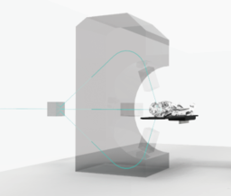

プレスリリース検索
FLOGmall、Eコマース・プラットフォームのα版をローンチ
FLOGmall

CoinGeek.comが新しいビットコインキャッシュ（BCH）のトークナイゼーション・コンペを発表
CoinGeek.com
ONEmがmCoin（MCN）のICOプレセール実施中：世界初、インターネットの領域外でアクセス可能な仮想通貨
ONEmコミュニケーションズ（ONEm Communications）
Globitexのプレセールが300万ユーロを集めて完売
Globitex
ゲーマーとeスポーツファン向け配信プラットフォームのプレイ2ライブが非公開投資取引で700万ドルを確保、毎日24時間でeスポーツ大会のライブ再放送を開始
プレイ2ライブ（Play2Live）
Graftブロックチェーンがメインネットを予定より早くローンチ
Graft Blockchain
Glosferが仮想通貨HYCONのジェネシスブロックを作成
Glosfer
Delphyの予測市場アプリの事前登録に10万人超が応募
Delphy
4Newリミテッド：KWATTコイン－トークン化された電力
4Newリミテッド
スポーツ業界のデジタル通貨STARS Token、プロサッカークラブの新媒体としての地位を目指す
STARS GROUP IO LIMITED
プレスリリース・ニュースリリース
配信サービスの
共同通信PRワイヤー
メディアが取り上げる
プレスリリース配信サービス
77%
の記事化率
全てのプレスリリースが
転載対象の提携サイト
51
サイト

海外配信ネットワーク
全世界
35,000
媒体

プレスリリース
アクセスランキング
-
1 05/21 10:00
「特定技能ナビ™️」サービスを５月２１日より…
-
-
2 05/20 11:00
宝くじの新サービス開始、売り場購入でもポイ…
-
-
3 05/21 14:00
Ｘ線がん治療装置から置換え可能な超小型陽子…
-

-
4 05/20 16:56
東京都23区全域を網羅 リアルタイム浸水予測…
-
.JPG)
-
5 05/13 10:30
三太郎シリーズCMに新展開！『新auピタットプ…
-
-
6 05/21 15:30
性同一性障害を乗り越えた名取寛人が創る 和物…
-
-
7 05/21 12:00
Enjoy Summer！プレゼントキャンペーン！！
-
-
8 04/19 10:00
ソフトバンク新テレビCMギガ国物語『カラオケ…
-
-
9 05/17 11:00
MONGOL800のキヨサクさんがオリジナルの歌詞を…
-
-
10 03/27 10:00
「プレミアムなおこづかいプレゼントキャンペ…
-